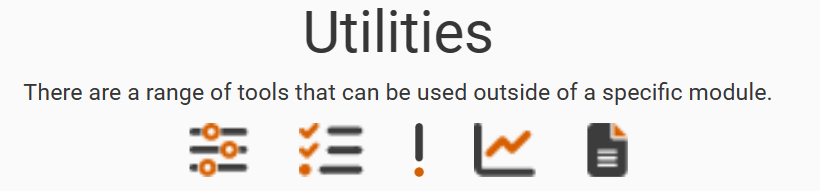

The utilities tiles are shown below the modules. Hovering over the image on the tile then a pop-up will indicate which tile this represents. See the Utilities section for more details for this section.

The tiles are displayed in this order: